15+
İldən Artıq Təcrübə
2008-ci ildən etibarən servis sektorunda uğurlu fəaliyyət, qazanxana və sənaye avadanlıqlarının təmirində zəngin mühəndislik təcrübəsi.
Binalar, istehsalat müəssisələri, fabriklər, aqrokomplekslər və asfalt zavodları üçün istənilən gücdə qazanxanaların, sənaye odluqlarının (burner), CO₂ avtomatika sistemlərinin, nasosların, generatorların, vintli hava kompressorlarının və PLC/MCC idarəetmə panolarının texniki servisi, təmiri və retrofiti.
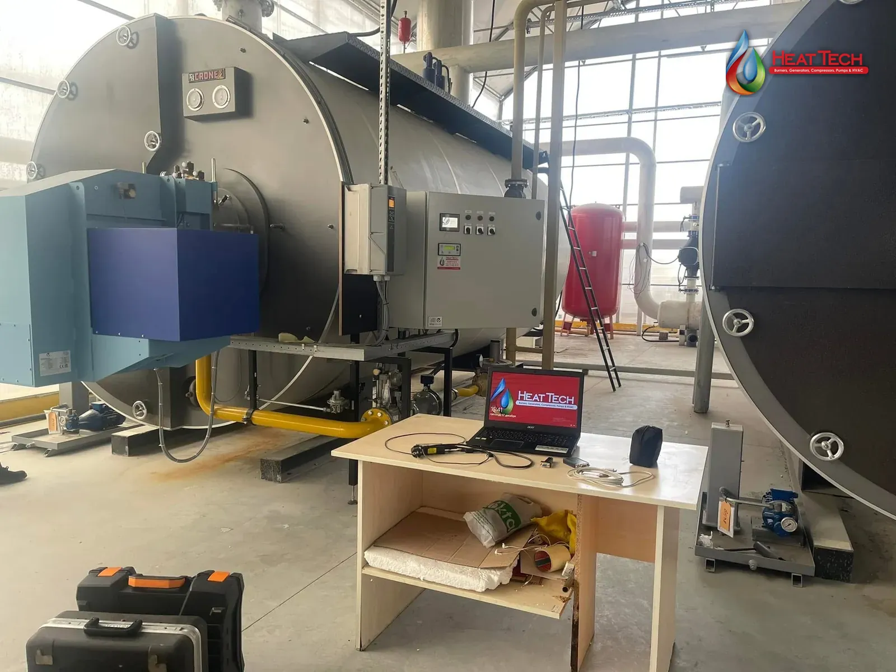

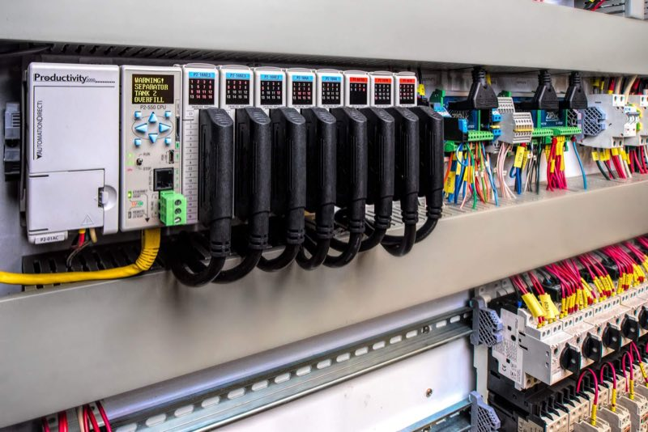
Bir mühəndis komandası, yeddi istiqamət: diaqnostika, əsaslı təmir, modernizasiya (retrofit) və planlı texniki xidmət. Məqsədimiz — avadanlıqlarınızın fasiləsiz işi, maksimal enerji səmərəliliyi və tam təhlükəsizlik.
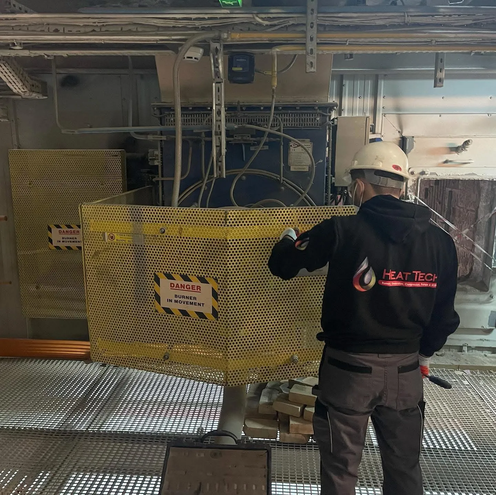
Avadanlığın nominal iş rejimini bərpa etmək - bütün xidmətlərimizin təməl sütunudur. Odluğun kalibrlənməsi, panonun retrofiti və dövri baxış çox vaxt yeni avadanlıqdan qat-qat ucuz başa gəlir və eyni nəticəni verir.
2008-ci ildən etibarən servis sektorunda uğurlu fəaliyyət, qazanxana və sənaye avadanlıqlarının təmirində zəngin mühəndislik təcrübəsi.
Bütün təmir, modifikasiya və ehtiyat hissəsi dəyişimi işlərinə zəmanət öhdəliyi.
İstehsalatın və ya müəssisənin dayanmaması üçün operativ mobil servis xidməti.
Odluqların dəqiq kalibrlənməsi və elektron modulyasiyaya keçirilməsi (retrofit) nəticəsində əldə olunan maksimum səmərəlilik.
Kiçik həcmli mərkəzi isitmə sistemlərindən tutmuş, nəhəng sənaye buxar qazanlarına, 20 MW-lıq qazanxanalara və asfalt plantı odluqlarına qədər tam texniki xidmət. Mexaniki hissə, yanma prosesi və avtomatika — üçü də bir komandada.

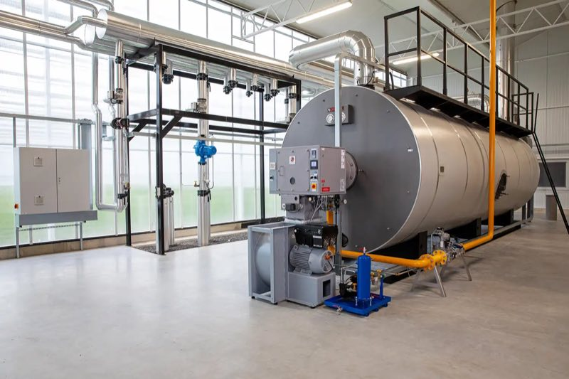
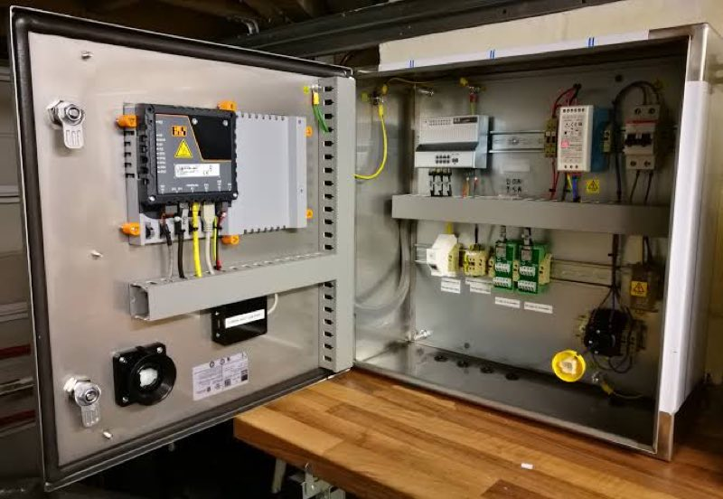
 01
01
İstənilən gücdə və tipli (suqızdırıcı, buxar, qızgın yağ) qazanxanaların kompleks texniki xidməti, diaqnostikası və əsaslı təmiri.
Qazanların daxili və xarici səthlərinin ərp və çöküntülərdən kimyəvi/mexaniki təmizlənməsi, təhlükəsizlik klapanlarının və avtomatik idarəetmə lövhələrinin tənzimlənməsi, mövsümə tam hazır vəziyyətə gətirilməsi. Potensial qəzaları öncədən müəyyən edərək gözlənilməz istehsalat dayanmalarının qarşısını alırıq.
02
Qaz, dizel, mazut və kombinasiya olunmuş (çoxyanacaqlı) odluqların təmiri, sınağı və kalibrlənməsi peşəkar səviyyədə.
Köhnəlmiş, mexaniki idarəetməli odluqları modernizasiya edərək (retrofit), mikroprosessorlu elektron idarəetmə və servo-mühərrikli hava-yanacaq nisbəti sistemlərinə keçiririk. Yanma prosesini rəqəmsal qaz analizatorları ilə tənzimləyərək CO və CO₂ emissiyalarını minimuma endirir, 15–30% yanacaq qənaəti əldə edirik.
 03
03
İstixana və aqrokomplekslərdə CO₂ səviyyəsinin normadan artıq və ya əskik olması həm məhsula zərər verir, həm də heyət üçün təhlükə yaradır.
CO₂ generatorlarının və dozajlama xətlərinin avtomatika sistemlərini sıfırdan qurur və ya mövcud sistemləri yeniləyirik: həssas CO₂ sensorlarının kalibrlənməsi, avtomatik qaz sızma təhlükəsizlik klapanlarının inteqrasiyası və mərkəzi idarəetmə pultuna (PLC) qoşulması.
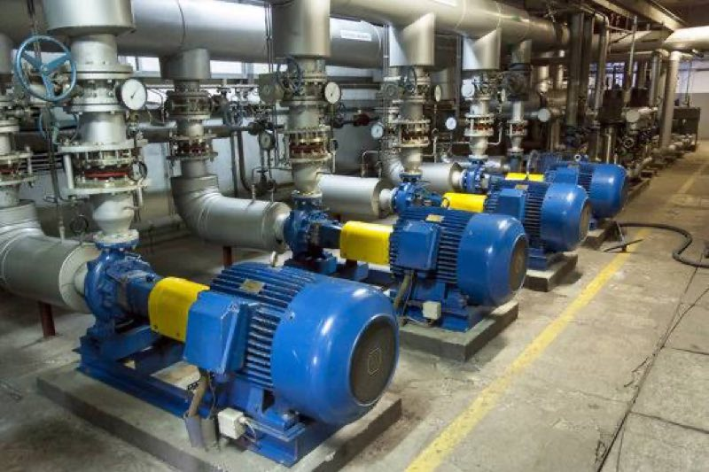
04Dövriyyə, təzyiq artırma (booster), yanğın və drenaj nasoslarının təmiri və profilaktikası.
Şaquli, üfüqi və mərkəzdənqaçma nasosların diaqnostikası, mexaniki salnik və yastıqların dəyişdirilməsi, rotorların dinamik balanslaşdırılması, mühərrik sarğılarının nəzarəti və tezlik çeviricilərinin (VFD) sazlanması. Kavitasiya riskini aradan qaldırır, elektrik sərfiyyatını azaldırıq.
 05
05
Pnevmatik avadanlığı sıxılmış hava ilə təmin edən vintli kompressorun dayanması bütün xəttin dayanması deməkdir.
Planlı baxış (yağ, hava və separator filtrləri), vint blokunun (air-end) əsaslı təmiri, klapanların bərpası, soyutma radiatorlarının təmizlənməsi və təzyiq sensorlarının sazlanması. Həddindən artıq qızmanın və təzyiq düşmələrinin qarşısını alırıq.
 06
06
Şəbəkə kəsildikdə müəssisəni enerji ilə təmin edən dizel və qaz generatorlarının operativ işə düşməsi həyati əhəmiyyət daşıyır.
Mühərrik və alternatör diaqnostikası, Avtomatik Transfer Şalterlərinin (ATS) tənzimlənməsi, idarəetmə kartlarının proqramlaşdırılması, yük altında sınaqlar və dövri yağ/filtr dəyişimi.
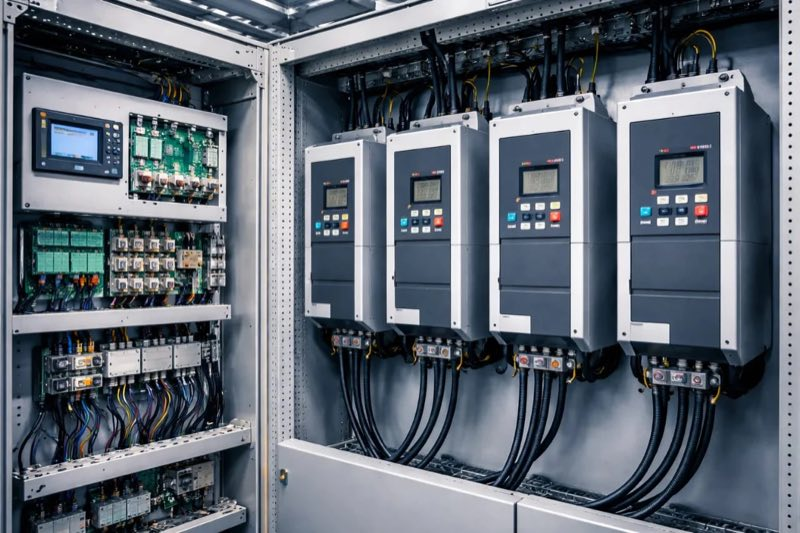
07Elektrik paylayıcı, avtomatika və PLC/SCADA idarəetmə panolarının sıfırdan yığılması, retrofiti və operativ təmiri — IEC/EN standartlarına uyğun.
PLC/HMI/SCADA lövhələri, güc və paylayıcı panolar (MCC/MDB), generator avtomatikası (ATS/AMF), tezlik çeviricilərinin (VFD) inteqrasiyası ilə 20–40% elektrik qənaəti, sensor və aktuatorların kalibrlənməsi.
Yanacağın vizual yox, spektral cihazlarla təhlili. Kalibrlənmiş analizatorla CO, CO₂, NO, NOx və O₂ göstəricilərini ölçür, hava/yanacaq nisbətini idarəetmə lövhəsindən (servo-mühərriklərdən) dəqiq tənzimləyirik.
Azad oksigenin çox olması lazımsız havanın qızdırılıb bacadan atılması (enerji itkisi), az olması yanacağın tam yanmaması deməkdir. Hava damperini dəqiq tənzimləyərək O₂-ni ideal həddə (təbii qaz üçün 3–4%) gətiririk.
Yanacaq tam yanmadıqda karbon-monoksid əmələ gəlir — birbaşa havaya sovrulan yanmamış pul və zəhərlənmə riski. CO-nu ppm səviyyəsinə endirməklə yanacağın 100%-ə yaxın effektivliklə enerjiyə çevrilməsini təmin edirik.
Bacada CO₂-nin pik səviyyəyə çatması yanacağın ideal yandığını göstərir. Maksimum CO₂ verimi üçün hava və yanacaq girişini tam balansa gətiririk.
Yanma kamerasında temperatur həddindən artıq yüksək olduqda zərərli NOx qazları yaranır. Alovun formasını və temperaturunu tənzimləyərək Low-NOx standartlarını təmin edirik.
Düzgün tənzimlənməmiş sənaye odluqları il ərzində tonlarla artıq yanacaq və ya minlərlə kubmetr artıq təbii qaz yandırır. Analizatorla tənzimləmə bu itkini anında dayandırır.
Tam yanmayan yanacaq qazan borularında qurum yaradır. 1 mm-lik qurum təbəqəsi istilik ötürülməsini 10% zəiflədir. Analiz sayəsində borular təmiz qalır.
CO və NOx qazlarının beynəlxalq ekoloji normalara uyğunlaşdırılması və Dövlət Ekologiya müfəttişliklərinə rəsmi Baca Analizi Hesabatının təqdim edilməsi.
| Meyar | Birdəfəlik Təmir və Servis | Dövri (Müqaviləli) Texniki XidmətMaksimum qənaət |
|---|---|---|
| Xidmət məqsədi | Mövcud nasazlığı və qəzanı aradan qaldırmaq | Qəzaların baş verməsinin öncədən qarşısını almaq |
| Reaksiya müddəti | Müraciət növbəsinə uyğun operativ müdaxilə | 24/7 prioritetli və anında reaksiya |
| Maliyyə planlaması | Qəza anında gözlənilməz xərclər | Öncədən bəlli, sabit illik/aylıq büdcə |
| Avadanlığın ömrü | Qısamüddətli bərpa | Maksimum uzunömürlülük və yüksək effektivlik |
| Yanacaq qənaəti | Yalnız təmir olunan detal çərçivəsində | Daimi kalibrləmə sayəsində maksimum qənaət |
Mexaniki idarə olunan köhnə odluqlarda hava və yanacaq nisbəti dəqiq tənzimlənmir. Retrofit zamanı rəqəmsal idarəetmə və servo-mühərriklər quraşdırılır. Bu, yanacağın tam yanmasını təmin edərək 15–30% qənaət verir.
Sənaye müəssisələrində və böyük qazanxanalarda ildə ən azı 4 dəfə (mövsüm keçidlərində). Həmçinin yanacaq keyfiyyəti dəyişdikdə və ya təmir işindən sonra mütləqdir.
Dövri xidmət zamanı mühəndislərimiz kiçik nasazlıqları öncədən aşkar edir. Bu, istehsalatın anidən dayanmasının və sonradan yaranacaq çox daha bahalı təmir xərclərinin qarşısını alır.

Yüksək güclü asfalt plantı odluqlarının (dizel, mazut, təbii qaz və ya kombinasiya olunmuş) təcili təmiri, yanma kamerasının kalibrlənməsi, alov sensorlarının təmizlənməsi və qaz/hava qarışığının optimal tənzimlənməsi.

İstixanaların CO₂ idarəetmə sistemləri, böyük həcmli isitmə qazanxanaları, suvarma və təzyiq nasos stansiyalarının fasiləsiz servisi.

İstehsalat xətlərini təmin edən buxar və qızgın yağ qazanları, yüksək təzyiqli vintli hava kompressorları, sənaye odluqları və MCC panolarının təmiri, retrofiti.

Mərkəzi isitmə və isti su qazanxanaları, təzyiq artırma (booster) nasosları, dövriyyə sistemləri və qəza generatorlarının kompleks baxışı.
Təhlükə potensiallı obyektlərdə (buxar və suqızdırıcı qazanlar, təzyiq altında işləyən qablar) montaj, sazlama və təmir işlərinin, həmçinin texniki qurğuların diaqnostikası və yoxlamalarının aparılması üçün rəsmi lisenziyalar.
Mühəndis heyətimizin aparıcı beynəlxalq odluq, qazan, vintli kompressor və generator istehsalçılarının xüsusi təlim mərkəzlərində keçdiyi ixtisaslaşma akkreditasiyaları. Tam siyahı və skan nüsxələr: heat.az/#sertifikatlar


 Azfen
Azfen Caspian Plaza
Caspian Plaza Dəmirçi Tower
Dəmirçi Tower AGA İş Mərkəzi
AGA İş Mərkəzi Bakı Sağlamlıq Mərkəzi
Bakı Sağlamlıq Mərkəzi
 Respublika Diaqnostika Mərkəzi
Respublika Diaqnostika Mərkəzi Dünyagöz Klinika
Dünyagöz Klinika İlk İnşaat
İlk İnşaat Qəbələ Konserv Zavodu
Qəbələ Konserv Zavodu
 Milla
Milla Azərtoxum
Azərtoxum Garabagh Resort & SPA
Garabagh Resort & SPA Gashalti Health Hotel
Gashalti Health Hotel Zirə Gülçülük
Zirə Gülçülük Glassman
Glassman Şəmkir Agro
Şəmkir Agro Era Agro
Era Agro Azərkarton
Azərkarton Greentech
Greentech Agrofavorit
Agrofavorit Ecoprod
Ecoprod Gözəl Seeds
Gözəl Seeds GFC
GFC Agrofresh
Agrofresh Pozitron Agro
Pozitron Agro N1 Çörək Zavodu
N1 Çörək Zavodu Bakıxanov Çörək Zavodu
Bakıxanov Çörək Zavodu Red Globe
Red Globe GBS
GBS Təmiz Şəhər
Təmiz Şəhər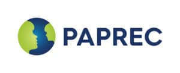
Paprec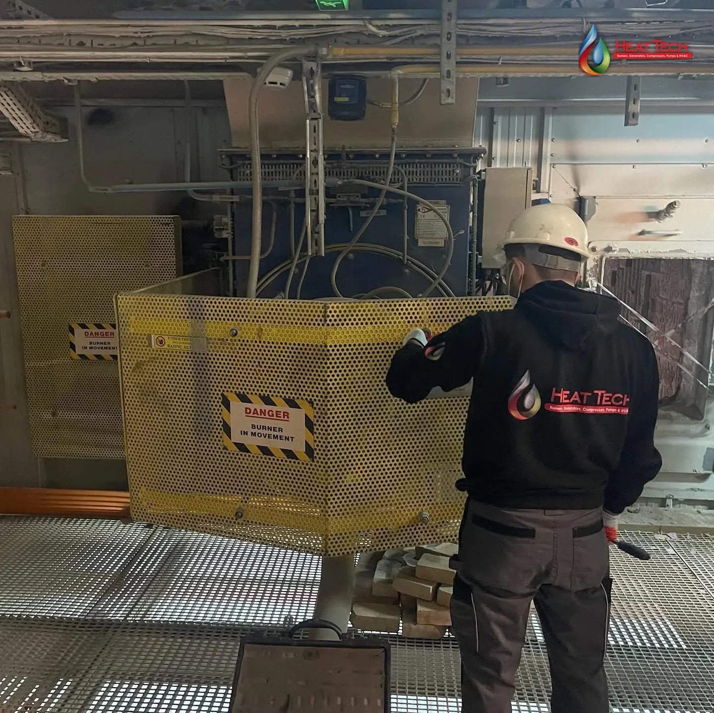
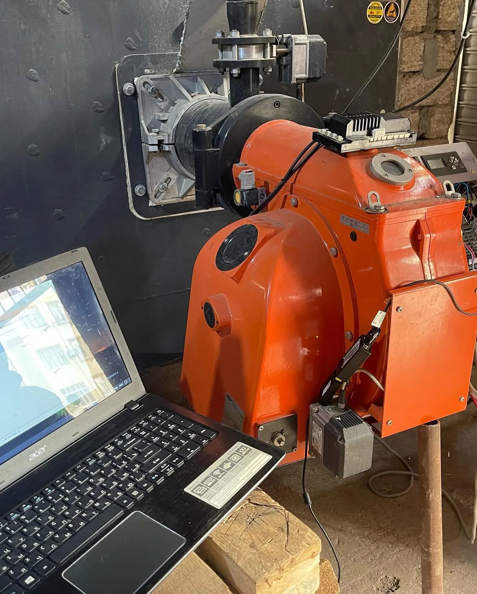
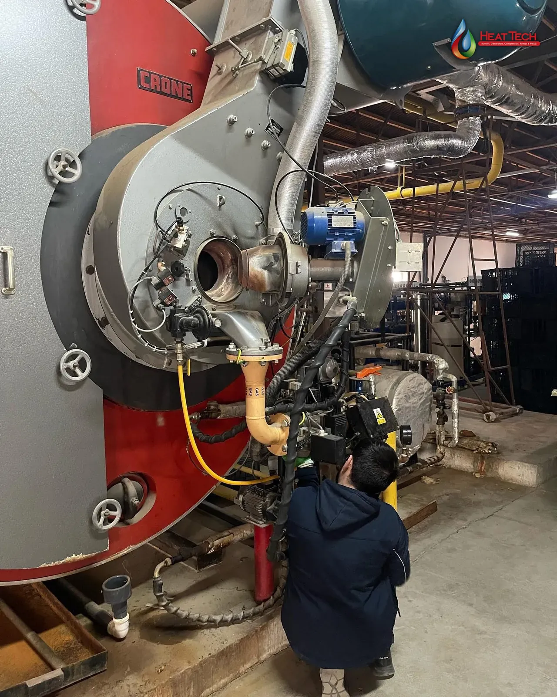
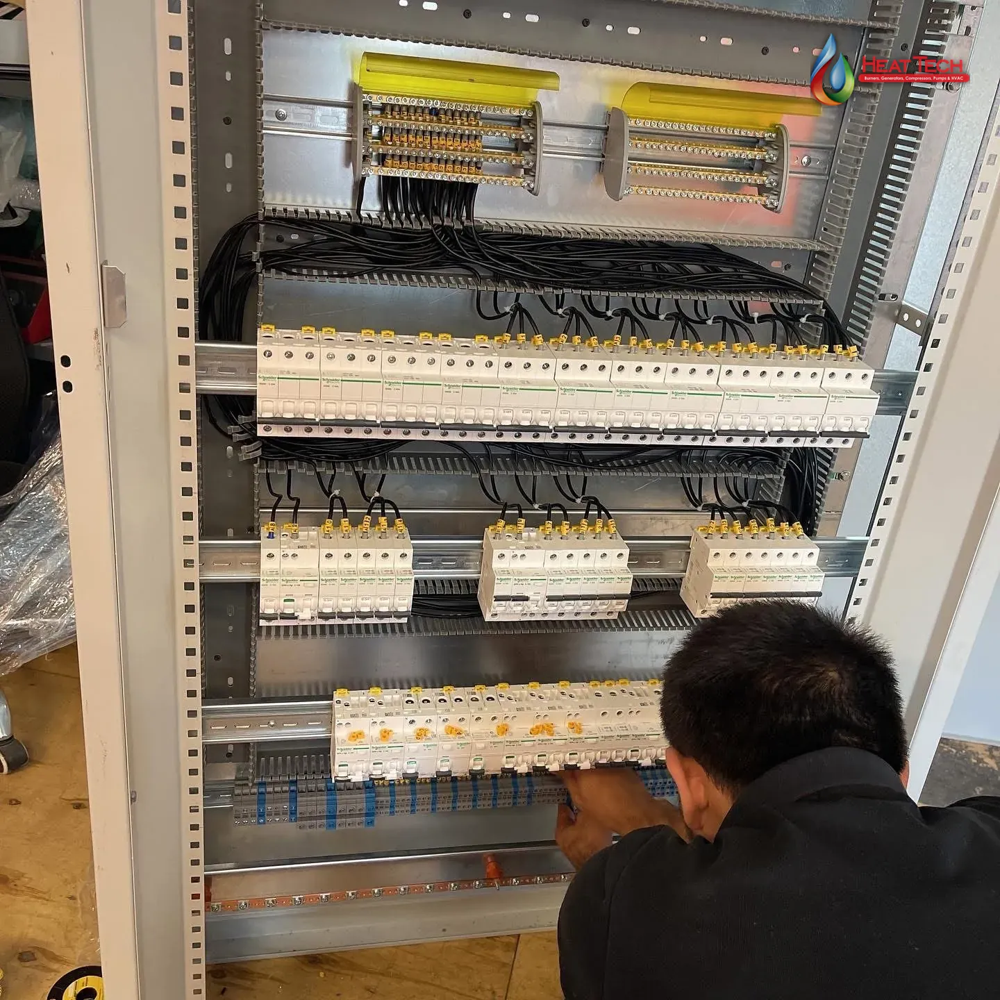
Mühəndisimizin müəssisənizə baxış keçirməsi, mövcud avadanlıqların auditi və sizə xüsusi texniki/kommersiya təklifinin hazırlanması üçün bizimlə əlaqə saxlayın.
© 2026 HeatTech MMC. Bütün hüquqlar qorunur.